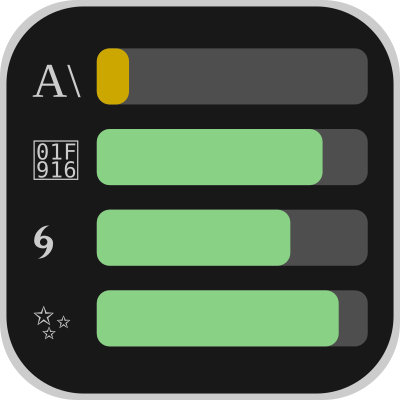

No Services Active
Enable LLM services in the Settings tab to start tracking usage.

Enable LLM services in the Settings tab to start tracking usage.
Enable or disable LLM service tracking.
Choose whether quota values show what you have used or what you have left.
How often to refresh usage data from services.